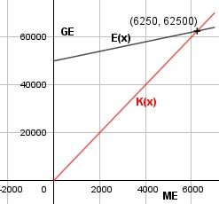
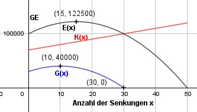

Aufgabe 87 Eine Firma verkauft im Monat 10 000 Artikel zu je 10 €. Ihre Produktionskosten setzen sich zusammen aus 50 000 € Fixkosten und 2 € pro produziertem Artikel. a) Ab welcher Stückzahl erzielt sie Gewinn? Wird der Verkaufspreis um je 0,20 €/Stück gesenkt, erhöht sich die verkaufte Menge um je 500 Stück. b) Bei welchem Stückpreis entsteht maximaler Gewinn? c) Bei welchem Stückpreis wird am meisten verkauft? a) x = Anzahl der verkauften Artikel E(x) = 10 * x K(x) = 50 000 + 2 * x 10x = 50 000 + 2x | -2x 8x = 50 000 | :8 x = 6 750 Stück

b) x = Anzahl der Preissenkungen E(x) = (10 000 + 500 * x) * (10 - 0,2 * x) E(x) = 100 000 - 2 000x + 5 000x - 100x2 E(x) = - 100x2 + 3 000x + 100 000 K(x) = 50 000 + 2 * (10 000 + 500 * x) K(x) = 50 000 + 20 000 + 1000x K(x) = 70 000 + 1000x G(x) = -100x2 + 3 000x + 100 000 - (70 000+1 000x) G(x) = -100x2 + 2 000x + 30 000 G'(x) = - 200x + 2 000 G''(x) = - 200 < 0 - 200x + 2 000 = 0 |+200x 200x = 2 000 | :200 x = 10 Preissenkungen G(10) = -100*102 + 2 000*10 + 30 000 = 40 000 GE Hochpunkt (10|40 000) Nach 10 Preissenkungen entsteht ein Gewinn von 40 000 GE. Preis nach 10 Preissenkungen = 10 € - 10 * 0,2 € = 8 € Bei einem Stückpreis von 8 € entsteht maximaler Gewinn. c) Die größte Verkaufsmenge nach x Preissenkungen entsteht im Erlösmaximum: E'(x) = - 200x + 3 000 E''(x) = - 200 < 0 - 200x + 3 000 = 0 |+200x 200x = 3 000 |:200 x = 15 E(15) = -100 * 152 + 3 000 * 15 + 100 000 E(15) = 122 500 Hochpunkt (15|122 000) Nach 15 Preissenkungen beträgt die maximal verkaufte Menge 122 500 Stück, zu einem Preis von 10 € - 0,2 * 15 € = 7 €